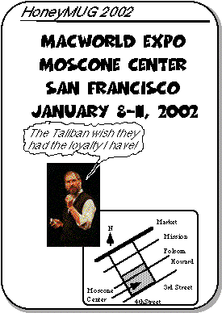

MacWorld Expo 2002 Meeting Notice

One Year At A Time
The best laid plans of the titans of industry often get derailed by surrounding yourself with the wrong people and losing the ability to discern the difference between desire and reality - Scott Adams
We are once again an independent company, which is probably the best thing that could have happened. We've had our share of continuing job losses, due to mismanagement, the botched merger, and the terrorist attacks. At least those of us left here still have a sense of loving what we do, and we wouldn't have it any other way in this industry.
Apple finally met the goal of releasing OS X. On March 24 of this year, OS X was released as a finished product. Of course, the term "finished product" is relative, as was the term "Public Beta" last year. Still, OS X offered many advantages over Apple's previous operating systems - a stable BSD unix core, and a Classic layer for backwards compatiblity. Still, Apple has been very good releasing incremental updates throughout the year.
The release of 10.1 last September finally made OS X usable enough to be used as the main operating systems for consumers (I wish I could say the same for those with legacy hardware or are in some of Apple's core business markets).
Financially, Apple has been profitable all this year, which is very good considering how competitors like Gateway and Compaq have fallen on hard times. It's nice to see the term "beleaguered" applied to companies other than Apple.
On the hardware front, Apple released the best-selling G4 Titanium PowerBook and redesigned 2001 iBooks. They also released their first non-Mac hardware since the Newton - the iPod MP3 player.
On the CPU front, the top speed of Apple high-end G4 towers increased from 500 MHz a year ago to 867 MHz today. Mac users continue to hope that the 1GHz barrier will be broken early next year, while some Mac web sites continue to engage in drug-induced self delusion.
Although the Wintel world has reached 2GHz, they are realizing that Megahertz doesn't really matter anymore, unless you need a computer doubling as a space heater, a noisy box with six cooling fans, and want to give your privacy to Microsoft by upgrading to Windows XP.
2001 MUG highlights
Offsite meetings were scarce this year. Our best ones involved going to a local Gardena sushi factory and watching the conveyor belt bring us gobs of rice topped with various seafood goodies. We also expanded our lunch membership by bringing in Niall and Len. They're not Mac users (yet), but they're great company. We did have a couple of meetings with former members Roger, Ming, and Dick.ur Torrance Art Department finally got a Macintosh hardware update, consisting of a few 800MHz dual processor PowerMac G4 towers. These babies really scream beyond those puny 1GHz company-standard Dell PCs, once again proving the MegaHertz Myth perpetuated by the Wintel hegemony.
Taking back his lead as the king of the MUG hill, Tracy got a dual processor 800MHz G4 tower, although the question remains whether he's actually going to benefit from the increased horsepower.
Alex finally got broadband cable, bought a G4 Cube just to run OS X, and has generally had a blast using Apple's new OS.
Happy Holidays to all,
Alex Morando
The Meeting
As usual, we will be having our regular lunch/dinner get-togethers at Macworld. The meetings will occur during all days of this years' show.Here is an ASCII rendition of the meeting place for MacWorld Expo. We will meet at the lobby of the South Hall of Moscone Center.
The meeting times are
* January 8, 2002 between 1:00- 1:15 pm
* January 9-11, 2002 between 12:00-12:15pm
[ASCII diagram removed]